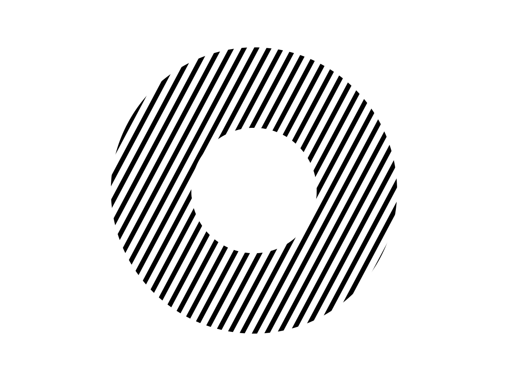
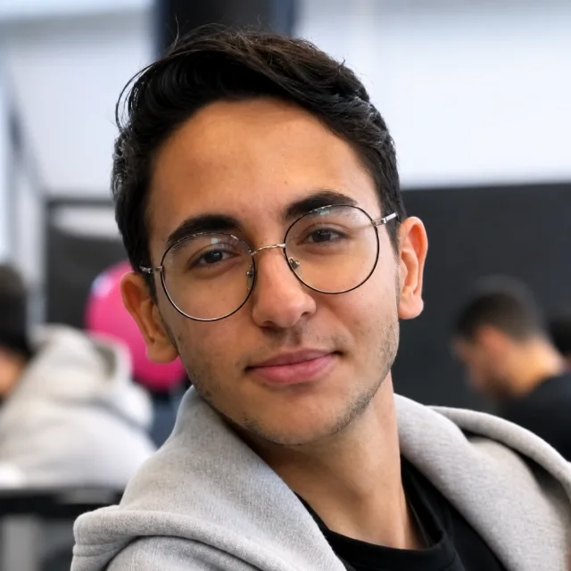
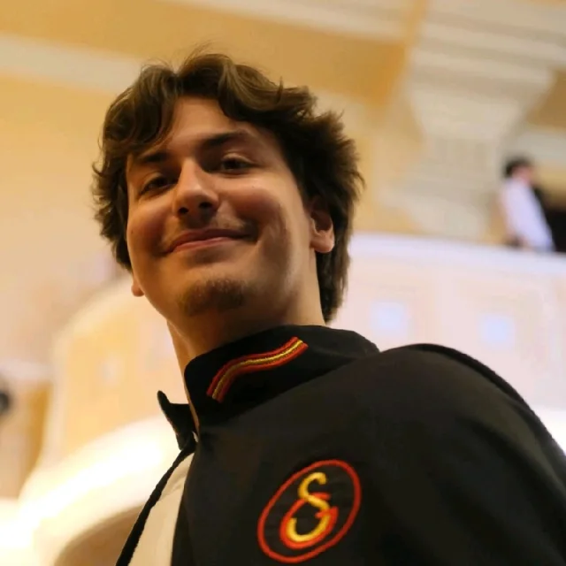
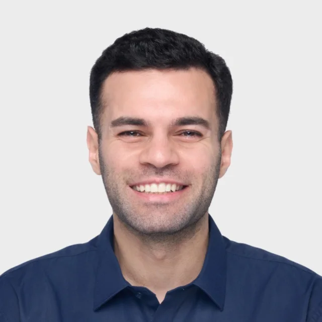
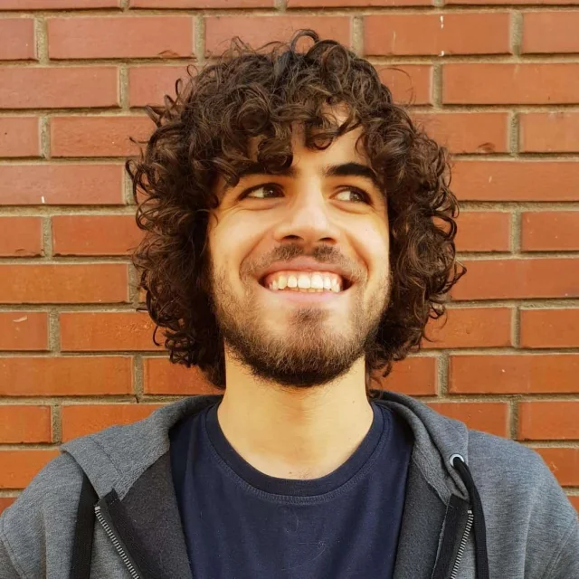

Maddi destek
Yıllık paketin üçte ikisi aylara yayılarak her ayın başında ödenir; kalan üçte biri, şartları tamamlayanlara program sonunda başarı bonusu olarak verilir.
2026–2027 başvuruları açık. Son başvuru: .
Başvur
Genç girişimciler için 12 aylık maddi destek, mentorluk ve gelişim programı.
Yıllık paketin üçte ikisi aylara yayılarak her ayın başında ödenir; kalan üçte biri, şartları tamamlayanlara program sonunda başarı bonusu olarak verilir.
Hedefine yaklaşmanı sağlayacak kitap, yazılım, yapay zekâ aracı, abonelik veya öğrenim kaynağı ihtiyacını birlikte değerlendiririz.
Ürün geliştirme, büyüme, iş stratejisi ve bağlantı kurmanın yanı sıra zihniyet, kişisel sorunlar ve karar verme süreçlerini de konuşuruz.
Başarılı girişimcilerle, önceki dönem bursiyerleriyle ve aynı yolu yürüyen gençlerle tanışırsın. Zamanla sen de yeni bursiyerlere deneyim aktarabilirsin.

Dört ürünü gerçek kullanıcıya ulaştırdı; bugün iki ürününden aylık gelir elde ediyor.
“11x’e başladığımda akademi ile girişimcilik arasında
kararsızdım ve yalnızca ürün geliştirmeyi biliyordum. Bugün
yaklaşık 100 müşteri görüşmesi yaptım, dört ürünü gerçek
kullanıcıya ulaştırdım, iki ürünümden aylık gelir elde ediyorum
ve kendi yolumu seçmiş durumdayım.”

ODTÜ’deki ilk yılını 4.0 ortalamayla tamamladı; ODTÜ70 VC deneyiminin ardından Boğaziçi Ventures’ta staja başladı.
“11x bana hangi kararı almam gerektiğini söylemek yerine,
seçeneklerimi görmeyi ve onları nasıl değerlendireceğimi
öğretti. Aynı dönemden akranlarımla kendimi kıyasladığımda
“Abi calculus’te o sorular nasıl çözülüyor?” noktasındayken
çoğunluk, ben ne istediğim konusunda kapsamlı bir fikir
sahibiyim ve bu doğrultuda çalışıyorum.”
11x Mezunlar Topluluğu
Programı tamamladıktan sonra 11x Mezunlar Topluluğu'na katılırsın. Burada yeni ve eski bursiyerlerle tanışırsın. Birbirinizle deneyim paylaşır, birlikte üretir ve birbirinize destek olursunuz.

Colonist.io kurucusu
“Settlers of Catan”ın web tabanlı alternatifini kurdu ve ürünü 10 milyondan fazla oyuncuya ulaştırdı. Genç yaşta ODTÜ HipHop Topluluğu'nu ve 200 bin takipçiye ulaşan sosyal medya sayfaları kurdu.
demiculus.com
Haystack Analytics kurucusu
Meta ve AngelList gibi B2B şirketlerine milyonlarca dolarlık satış yaptı. Kodu internet kullanan insanların yaklaşık %99,9'una dokunuyor. Eski profesyonel espor oyuncusu ve ODTÜ Espor Topluluğu'nun kurucusu.
kanyilmaz.meKendi kararlarını almış, bir şey üretmiş ve bunu somut biçimde gösterebilen gençleri.
1 + 1 = 11x. Bir genç ile doğru desteğin bir araya geldiğinde oluşturduğu çarpan etkisi.
Evet. Türkiye'de veya yurt dışında yaşayan Türk vatandaşları başvurabilir.
Hayır. Temel kriterler yaş aralığı, Türk vatandaşlığı, daha önce proje üretmiş olmak ve bir alandaki sıra dışı başarını gösterebilmektir.
Bir oyunda sıralama, sporda derece, akademik başarı, takipçi sayısı, açık kaynak katkısı, dil seviyesi veya ürettiğin projenin sonucu gibi somut bir kanıt arıyoruz.
Son başvuru tarihi 1 Eylül 2026'dır.